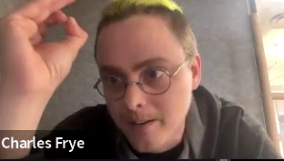

LLM Workshop #1 - How to take a course that never ends
Mastering LLMs: A Conference For Developers & Data Scientists

These days, it goes by many names, but officially the “workshop” is known simply as “Mastering LLMs: A Conference For Developers & Data Scientists”.
Initially envisioned as a four-week course, it quickly evolved into something much more dynamic — a conference brimming with talks, office hours, and a wealth of insights shared on their Discord. Participants also received a generous amount of credits from various companies in the field to experiment on their own.
Although the event has technically concluded, I’m remain only 95% convinced that it’s truly over (a new “30 minute” 90 minute session could pop-up in my calendar at any moment).
At it’s core, the event is about equipping participants with the necessary tools and techniques to create a comprehensive pipeline for building generative NLP solutions, from dataset curation to deployment. Its spans 4 core workshops, 20 conference sessions, 6 office hours, and a bunch of async discussions via discord. If that sounds like a lot of content, good … because it is! My friend Sanyam summed my feelings in week 3 with this message I got from him on Discord …
Are you feeling overwhelemed by the course as well? I feel this is fastai by at 1000x speed … but for real world, energy. It’s impossible for me to just keep up with the lectures, barely getting time to play with examples or run some code.
So yah, to start, I want to share my thoughts on the major lessons learned and help folks figure out how to navigate and succeed in course/workshop/whatever of this scale. This is an opinionated take from someone who’s been around awhile, but I hope an experienced take worth consideration.
How to take this course
Here I want to share 4 tips to getting the most of this course.
My advice is to definitely watch the main conference workshops … TWICE.
This is how I do the fastai courses as well. I watch the lecture more as an active participant the first time, watching it live if possible, asking (and answering question), jotting down thoughts or other parts of the lecture I want to dive deeper into later. On my second watch, I usually have a “printed” version of the session notes/slides on my iPad that I annotate as I got through it again a bit slower. I usually do this 2nd watch a few days after to give my brain time to rest and reflect.
From there I suggest following the same approach with any conference talks you’re interested in … but only doing that 2nd watch for those you care about. Honestly, I still haven’t watched all of them myself and have been content to really spend time with those most close to the things I’m working with IRL and/or I want to learn (e.g., I’ve watched Ankur Goyal’s talk on using BrainTrust about 3-4 times because I like the tool and I want to explore it as something I use in both my personal and professional life).
As for the office hours, I’ve tried to attend as many as I could and ask a lot of questions. I don’t watch these a 2nd time and I don’t do a lot of detailed note taking except where something really lands as important or useful to me personally (like an answer to one of the really great questions that come up in these).
Time is precious. One of the keys to succeeding in this course and walking away without a mental breakdown is to manage it by spending your time on the things that matter to you.
The like $3,500 in free credits is great, but for me, the real alpha of this course … and the real bang for your buck … is in the Discord. Spend a lot of time there!
You are literally able to interact with other practitioners and course instructors who charge serveral hundered dollars an hour as consultants for the same kind of expertise and guidance you get for your one-time payment of $500. For me, this puts the value of the course into the tens of thousands easily, making my call to signup easily one of the best decision I’ve made in 2024.
Again, there is A LOT of content in the discord so my recommendation is to focus on the channels dedicated to things you care about vs. trying to read it all. Some of my favorites include:
Workshops (all of them)
Debugging Help / training-runs (lots of learning from folks like Zach Mueller and others via real fine-tuning attempts; very helpful)
Debugging Help / axolotl
Talks / kylecorbitt_prompt_to_model
Talks / ankurgoyal_textsql_llms
Talks / jason_improving_rag
Talks / clavie_beyond_rag_basics (deserved way more than 30 minutes, 😁)
Talks / pawel-function-calling
Talks / whitaker_napkin_math
Office Hours / charles-modal
Office Hours / replicate
Again, time is precious. Since my interests were with evals, structured outputs, RAG, and deployment … the above were the channels I spent most of my time in. Believe it or not, there are a few channels that remain unexplored for the time being (so much great stuff).
Time works different in the workshop. For example, a “30 minute” session is really about 75 minutes, a “45 minute” session about 90 minutes, and any of the “2-hour” workshop will likely go an additonal hour.
Now that this course is “over”, this may not be that big of a deal. But, when I was blocking out time in my calendar these were the heuristics I followed. Think on this when that next calendar invite pops up or you end up taking some similar course in the future.
If you can do only one thing … build something and blog it!
This is really the golden rule of course like the LLM Workshop and fast.ai. If you really want to gain some mastery in the subject, you have to build something and explain it to others.
A great example of this in practice can be found by following Alex Strick van Linschoten’s blog posts regarding his course project. Exceptional content and an example of what it looks like to succeed in a course like this. Its a win-win for Alex and the community at large.
This is the direction I’ll be going in future posts in this series.
Key Takeaways
I’ve learned a lot to say the least. Below are some of the key takeways I’ve taken away from the course that I hope will aid your navigation and success with it as well.
Trust fucking no one (TFNO)

“Trust fucking no one!” - Charles Frye (also winner of quote of the conference)
Indeed, when it comes to fine-tuning … “If you’re not nervous, you don’t understand.”
If you weren’t scared as hell about getting your prompt templates to match up at both training and inference time already, be prepared to be terrified. And if you’re not carefully looking at examples of your fleshed out prompts during both phases, prepare to get F’d.
99% of errors happen with the template
Look at your data
You need to spend time looking at your data to understand what is going on, gain intuiton on how to improve things, and actually make things better. Automated metrics can only take you so far in the generative game and even high-quality LLMs as judges will fail. Look at your data a lot!
Build an Evals-First Development Mindset
Evals are a big part of this course and likely one of the most ignore aspects in building generative solutions where the normal course seems to be for folks to just slap a react app on top of a fastapi backend that makes calls out to gpt-4 with a prompt and RAG mechanism that seems to work. But how can you tell if it is really “working”? How can you tell it is still working and working for others besides yourself? How can you tell changes you make to your model, prompt, RAG, whatever is having a positive or negative effect?
The answer is you can’t without good evals, and good evals are something built up over time and a project in and of themselves. They aren’t static. Having a good system to build and continuously improve on them is one of the most important ways you can ensure you are delivering a quality AI solution.
Also, don’t forget to include human experts where possible!
Prove You Need to Finetune
Try not to finetune first … you need to prove to yoruefl that you should finetune [using] some minimal evaluation system and you hit a wall and can’t make progress by just prompting
Good use cases for finetuning:
- Owning your own model
- Data privacy
- Domain specific things that models like GPT and Claude haven’t been trained on
The narrower the domain/problem … the better.
Don’t Try and Build a General Purpose Chatbot
Being asked to build a chatbot is a smell because the surface area is very large and unscoped, making it difficult to make progress on. We simply do not have the time, money, data, and resources companies like OpenAI and Anthropic have to make a chatbot that can perform as well as theirs in general … and no one wants to use an AltaVista like chatbot when you got Google.
I’m watching this happen in real-time at work and its not pretty.
Use your Eval Pipeline to Curate Training Datasets
In the real-world, we can’t just start with pre-processed dataset from Hugging Face. In the real-world, we’ll often have to find creative and out of the box ways to curate our own dataset to evaluating our AI systems. Having a good evals framework is how you get this done, especially at the beginning where you probably don’t have access to many, if any, human experts providing examples for you to use. Starting with a good LLM from OpenAI or Anthropic for example, along with a growing set of scoring functions and some time of your own for review, is a great way to curate an initial training dataset you can build on going forward.
Breakdown use cases into specific examples, log the traces, and use them in your finetunes.
What LLMs should I use in generating synthetic data?
I like mistral large … use the most powerful model you can”
Eval/Logging Tools I like (so far)
I’m going to give BrainTrust and LangSmith a go. I’m most familiar with the later, but I really liked the UX and explict-ness of running evals with BrainTrust.
Minimize Friction
Just like analysis paralysis, there’s an eval paralysis where you might be so consumed on having a fully fleshed out eval pipeline or the feeling you have to pick out the right tooling that you never really get started. Don’t let that happen. Start with simple assertions, use the high-quality LLMs, use notebooks … do whatever you can to get a quality dataset you can get going with quickly
Get Up and Running Quick
No one wants to deploy a training job with 100k samples for fine-tuning a Llama3 70B only to find out that it fails after a day or so of running because you misspelled your HuggingFace username. Here’s my approach to quickly iterate and verify your finetuning strategy will work from beginning to end (learned from my time with the fast.ai course btw)
Use a subset of my dataset to train a model. Verify my inputs/targets look right, training works end-to-end, that my metrics are being logged to wanb correctly, and that my artifacts can be used and optionally uploaded to HF. I make my sample really small … like maybe 300-500 examples so I can iterate fast here. Once my setup is golden and everything is checked into github, login into Jarvis, grab yourself some big GPUS, clone your repo, install any libraries you need to, and train on your full dataset. Pour yourself a glass of a good scotch or whiskey.
Try to get it down to 15-30 mins max to verify your training works from start to finish. If you are using axolotl, take set max_steps to something small like 500.
How much data do you need?
I’ve heard as little as 50-100 examples can get you far.
Prefer Cloud over Local Training
I had a hell of a time getting CUDA installed and getting things to run on my 2x3090s. I don’t regret it, in fact, I get some sick satisfaction out of it. There’s nothing like launching a training job on my two blower GPUs as my wife sits down to watch an episode of Bridgerton on the TV downstairs (under which sits my DL rig).
However, I see lots of students struggling so hard on trying to get things working locally that they become beaten down before getting to the real meat of things. So my 2 cents for most folks in genera …
Its probably better to use a cloud provider like jarvis or modal rather than battling with your local rig. Of course, I didn’t follow my own advice because I’m OCD about things like this and can’t let things go until I understand the whys, hows, and resolutions for problems like this.
I’ve had excellent experience working with both of these platforms, along with superb support and help from folks like Vishnu (founder at Jarvis), and Charles (AI engineer at Modal Labs and speaker at every AI conference).
Also, use Linux. I see so many folks trying to get things working on Windows or their slick M3 Macbook pro and that is just a pathway to misery that will make you question whether you want to even be in the ML field. Don’t do it. Linux FTW
Prefer the Base model over the Instruct Version When Fine-tuning
Most LLMs come in two flavors, base and instruct. The former focuses simply on next-word prediction tasks whereas the later is focused on conversation. In general, the recommendation in the course is to use the base version to build on top of as it gives you complete control of the prompt template without having to worry about following the “instruct” template of whatever model architecture you choose to the tee. Also, as these instruct tempaltes vary widely from one LLM to another, its seems using the base model make it easier to run fine-tunes against a nubmer of LLMs without a lot of code gymnastics.
Insturction models have been finetuned for conversation … something you want to chat with.
Start with the basse model where possible … with the smallest model possible (e.g, the 7/8B parameter range)
Finetuning Examples Should Mimic what your LLM will see in production
If RAG is being used with your properitery LLMs, include it in your training examples for use in finetuning.
For Structured Output, Use Instructor or Outlines
For open models you should use outlines. for closed models APIs you should use instructor.
Instructor uses prompting and retries to achieve the desired output (and with openai it will prompt intelligently via the function schema definitions). Outlines clamp down the model predictions to only alllow permissible tokens according to your grammar. Outlines is going to have much stronger guarantees that it will work. No retries are even necessary. If outlines is compatible with your model (you have access to the forward pass because you own the model) you should use outlines
Next Steps
Build something.
Following Hamel’s course project repo as a guide, I’m going to explore improving a ML pipeline I built for work that allows users to upload a collection of survey comments, interview answers, etc… and have a variety of NLP analysis performed on the documents collectively and individually (eg., translation, sentiment, summarization, NER, and thematic analysis). The data and responses are styled in a way familiar to faculty, staff, and students in higher ed.
The current system makes a call out to gpt-4 for every document and for every collection of related documents to perform each task. It can get pricey and can take a long time depending on the number of documents being processed. I did this because I couldn’t get reliable results from asking the LLM to perform a number of tasks, whether the document/s where short or long.
For this course project, I’m going to start from the beginning and try to improve things by:
Curating a dataset from both generated data and local traces I have from the existing pipeline
Follow and “eval first” development structure, so I can evaluate the proprietary LLMs (e.g., gpt-4, gpt-4o, gpt-3.5-turbo, etc..) I’m using right now.
Use tool calling and more complex pydantic models to reduce the number of calls I need to make and lower costs.
Finetune a variety of smaller models on a curated datset to see if I can improve the quality of my predictions while also lowering costs and latency even more.
If folks have any suggestions or ideas to improve this approach, please let me know in the comments or on twitter. I’d especially love to hear from people who have gone down a similar path and what worked (or didn’t) for them.